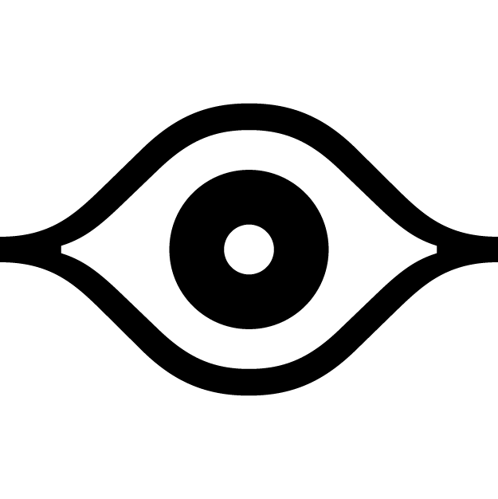

A RoboFont extension that highlights points and anchors that are aligned with vertical font dimensions, guidelines, or blue zones (if set to be visible).
Rest assured that your points are aligned, without having to zoom in and check.
--
Note: The eyes will match the appropriate color of whatever line it’s aligning to, based on the color preferences you have set in RoboFont.
2.9 2025.02.28 Update to new extension bundle. Add settings options.
2.4 2023.07.27 Add support for mid-slice-tool-analysis + components.
Thanks Connor & Erik for the help!
2.3.2 2023.05.31 Move eyes to foreground. Higher tolerance for diagonals. Clean up code.
2.3.1 2023.03.08 Support new naming for "glyphViewOnCurvePointsSize" default key.
2.3.0 2022.09.21 New framework for setting eye color (waiting on z-index infrastructure).
Fix display settings bug.
2.2.1 2022.03.02 Debug
2.2.0 2022.03.02 Support for angled guidelines.
Thanks for the math, Erik van Blokland!
2.1.1 2021.11.23 Darken blue zone eyes for more clarity.
2.1.0 2021.09.20 Use Merz more appropriately, overcoming a bunch of bugs.
Thanks Frederik Berlaen.
2.0.3 2021.09.10 Update font dimensions color preference key to follow RF4.
2.0.2 2021.07.20 Correctly set background container.
2.0.1 2021.07.02 Rewritten for RoboFont 4. Eyes are crispy now!
Support for changing anchor/on-curve display settings.
1.2.9 2021.03.17 Dodging tracebacks.
Thanks Jackson Showalter-Cavanaugh.
1.2.8 2021.01.30 Squash RF4 "Family Blues" bug & code cleanup.
PR - Thanks Frank Grießhammer.
1.2.7 2020.09.14 Support for 180° & 270°.
PR - Thanks Connor Davenport.
1.2.5 2020.07.15 Guides take precedence over font dimensions.
Support for anchors.
1.2.1 2020.04.03 Eye is rounded to nearest unit, making it possible
to see eye during a transformation with the Transform
tool, before mouse-up.
1.2.0 2020.03.26 Bug-fix. Allows multiple open fonts to have independent eyes.
Optimize coloring code a bit.
1.1.1 2020.01.27 Support for blue zone edges.
Thanks for the suggestion, Jeremy Mickel.
1.0.0 2020.01.24 Initial release